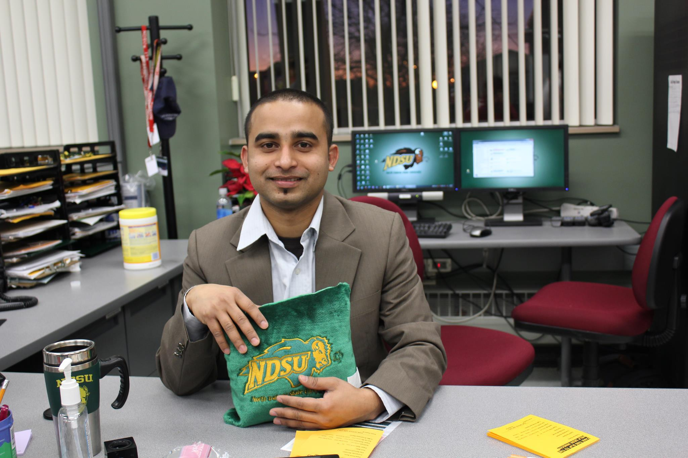
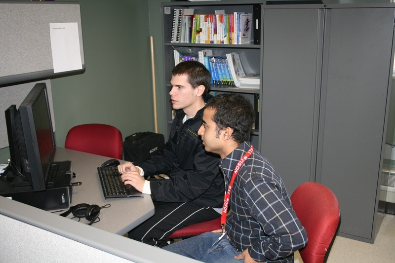

Just another Dude.
কম্পিউটার সায়েন্সে আন্ডারগ্রেড বা প্রোগ্রামিং এক্সপেরিয়েন্স না থাকায়, নর্থ ডেকোটা স্টেট ইউনিভার্সিটির কম্পিউটার সায়েন্সের হেড মৌখিকভাবে একবার, দুইবার, তিনবার এডমিশন না দিয়ে আমাকে ফিরিয়ে দিছিলেন। আমি তখন ইন্ডাস্ট্রিয়াল ইঞ্জিনিয়ারিং এ মাস্টার্সে এক সেমিস্টার শেষে, ইন্টার্ন করতে করতে ধারণা করেছিলাম, প্রোগ্রামিং করা কুল আর জব পাওয়া অনেক ইজি।
বিকল্প পন্থা হিসেবে, আমার আইপিই এর এডভাইজারকে বলেছিলাম, সিএসই এর একটা কোর্স নিলে, রিসার্চে সুবিধা হবে। ৩০ সেকেন্ড চিন্তা করে উনি, না করে দিয়েছিলেন। সিএসই এর হেড এর কাছে আরো একবার বার যাবার পর, আমাকে বুঝিয়ে বল্লো, "শুনো, এডমিশন দিতে হলে একটা মিনিমাম কোয়ালিফিকেশন দেখতে হয়। অনেকের কম্পিউটার সায়েন্সের আন্ডারগ্রেড সহ ৩-৪ বছরের কাজের অভিজ্ঞতা আছে।" এইটার উত্তর আগে থেকেই মুখস্থ করে গেছি। আমি বললাম, "I know its hard but I don't think it's impossible. আমি আন্ডারগ্রেডের প্রোগ্রামিং কোর্সে A+ পাইছিলাম। নেক্সট সেমিস্টারে, সিএসই এর দুইটা কোর্স নিতে চাই। যদি দুইটাতেই A পাই, তাইলে কি এডমিশন দিবা?" উনি বল্লেন, "I will try. However, your background won't qualify for teaching assistance or research position." তারমানে, এডমিশন যদি দেয়ও, স্কলারশিপ(ফান্ড) দিবে না।
এডমিশন পাইতে পারি, সেই খুশিতে, বগল বাজাতে বাজাতে, কম্পিউটার সায়েন্স ডিপার্টমেন্ট এর বিল্ডিং থেকে বের হয়ে, বাসে উঠতে না উঠতেই মনে হইলো, আইপিই এর এডভাইজার সিএসই কোর্স নেয়ার কথা আগেই না করে দিছে। এখন, এডভাইজারকে না জানিয়ে কোর্স নিলে, রিস্ক হচ্ছে, আমার আইপিই এর স্কলারশীপ ক্যানসেল করে, এমনকি, দেশে ফেরত পাঠাতে পারে। তাই অলমোস্ট কাউকে না জানিয়ে, নিজে নিজে দুইটা সিএসই এর কোর্স রেজিস্ট্রেশন করে, চুপি চুপি, চোরের মতো সিএসই এর ক্লাসে যেতাম। জানি, এডভাইজার চাইলে, যেকোন মুহুর্তে আমার রেজিস্ট্রেশন চেক করতে পারে। কিন্তু তারচাইতেও বড় ভয় ছিলো, যদি এডমিশন পাইও, ফ্যামিলি থেকে খরচ নেয়ার কোন অপশনতো নাই ই বরং প্রতিমাসে কমপক্ষে ৪০০ ডলার দেশে পাঠাবো কিভাবে?
লাইব্রেরি, বুকস্টোর, ক্যাম্পাসের নিউজ-পেপারসহ অনেক জায়গায় জবের ট্রাই করলাম, লাভ হইলো না। তারপরে শুনলাম, ইনফরমেশন টেকনোলজি সার্ভিস (ITS) এ হেল্প ডেস্ক কনসাল্টেন্ট হিসেবে কাজ পাওয়া গেলে, মাস্টার্সে টিউশন ফি মাফ পাওয়া যাবে। হেল্প ডেস্কের কাজ হচ্ছে, ক্যাম্পাসের কোন কম্পিউটার বা কারো ল্যাপটপে সামান্য সমস্যা হইলে, ঠিক করা। এই পজিশনগুলা অনেক অনেক কম্পিটিটিভ এবং নর্থ ইন্ডিয়ানরা চ্যানেল ধরে ঢুকে যায়। জান-প্রাণ দিয়ে, ইন্ডিয়ানদের পিছনে ঘুরে, ফার্স্ট রাউন্ড পার হয়ে, সেকেন্ড রাউন্ডে রিজেকশন খাইলাম। তার উপরে প্যারা হচ্ছে, একবার রিজেক্ট করলে, এক বছরে আর ইন্টারভিউতে ডাকে না। এখন কি করি?
এরে ওরে ধরে, খুঁজে খুঁজে বের করলাম, ইনফরমেশন টেকনোলজি সার্ভিস (ITS) এর একটা অংশ, Technology Learning & Media Center (TLMC), যেখানে, স্টুডেন্টরা তাদের ক্লাস প্রজেক্ট, এসাইনমেন্ট, প্রোগ্রামিং রিলেটেড প্রবলেম নিয়ে আসে। TLMC তে যারা কাজ করে তারা অলমোস্ট সবাই কম্পিউটার সায়েন্সের স্টুডেন্ট। ঐখানে গিয়ে বসে থাকতাম। ঐখানে যারা জব করে, তারা কিভাবে হেল্প করে দেখতাম। দিনের পর দিন, সপ্তাহের পর সপ্তাহ। ঐখানেই বসেই আমার ক্লাসের পড়া, এসাইনমেন্ট করতাম। TLMC তে যারা কাজ করে, তারা স্টুডেন্ট এবং ইউনিভার্সিটি এমপ্লয়ীদের জন্য প্রতি সেমিস্টারে কয়েকটা ওয়ার্কশপ অফার করতো - থিসিস রাইটিং, গুগল ওয়েবসাইট, এডভান্স এক্সেল, ইত্যাদি। এখন সমস্যা হচ্ছে, এডোবি ইলাস্ট্রেটর আর এডোবি ইন-ডিজাইন শিখাবে এমন কাউকে পাওয়া যাচ্ছে না। যদিও এই দুইটার কোনটাই আমি পারি না তারপরেও রিস্ক নিয়ে বললাম, TLMC তে যারা কাজ করে না, তারা কি ইন্সট্রাকটর হতে পারবে? TLMC এর হেড যে ছিলো, ও বললো, দেখি। টানা দুই সপ্তাহ অনলাইনে ভিডিও দেখে দেখে এডোবি ইলাস্ট্রেটর শিখে, ডেমো দেখানোর পরে, আমাকে ওয়ার্কশপটাতে শিখানোর দায়িত্ব দিছিলো।
এইদিকে, যেই দুইটা সিএসই এর কোর্স নিছি, ঐ দুইটার ক্লাসে গিয়ে, হাবলা কান্তের মতো বসে থাকি, মাথা মুণ্ডু কিচ্ছু বুঝি না। ক্লাস শেষে, এর কাছে যাই, ওর কাছে যাই, গুগল করি। তার উপ্রে আবার আইপিই এর ২টা কোর্স, রিসার্চের কাজ। আট ঘন্টা থেকে ঘুম চার-পাচ ঘন্টায় কমিয়ে, আড্ডা বাজি-দাওয়াত, ফেইসবুক বন্ধ করে, জীবন মরণ সাধনা চালাতে থাকলাম। ভাগ্য খুব সহায় থাকায়, মিডটার্মে দুইটা কোর্সেই ৯০ এর উপরে রাখতে পেরে, সিএসই ডিপার্টমেন্টের হেডের কাছে গিয়ে বললাম, আমাকে এডমিশন দাও। উনি বল্লো, গ্রেডতো এখনো আসে নাই। সেমিস্টার শেষ হয় নাই। আমি বললাম, রেজাল্ট পাবলিশ হওয়া পর্যন্ত অপেক্ষা করলে আমি নেক্সট সেমিস্টার ধরতে পারবো না, তুমি একটু কষ্ট করে, টিচারদের কাছ থেকে ফিডব্যাক নাও। ক্লাসের টিচাররা বলছে, আমি অনেক হার্ডওয়ার্কিং এবং ডেডিকেটেড। স্বপ্নের এডমিশন পেয়ে গেলাম। Fargo এর দুই বড় ভাইয়ের কাছ থেকে টাকা ধার করে নিজের একাউন্টে ঢুকিয়ে, I-20 (অফিসিয়াল এডমিশনের কাগজ) বের করছি। কিন্তু টিউশন ফি এর কি হবে?
এডোবি ইলাস্ট্রেটর ওয়ার্কশপে, মাত্র দুইজন শিখতে এসেছিলো। আরো দুইটা ওয়ার্কশপে, ভলান্টিয়ার হিসেবে ছিলাম। এরপরে, TLMC তে আমি জব না করলেও, কোন স্টুডেন্ট আসলে, চান্সে একটু আধটু হেল্প করতাম। ঐখানে যেসব ভারতীয় ছিলো তাদের সাথে খাতির শুরু হইলো। নভেম্বরের লাস্টের দিকে, একজন পাশ করে, ভার্সিটি ছেড়ে চলে যাবে শুনে, TLMC এর হেড কে রিকোয়েস্ট করে, হালকা সিস্টেম করে, একই সেমিস্টারের রিজেকশনকে পাশ কাটিয়ে, আবারো ইন্টারভিউ দিছিলাম। এইবার রিজেকশনের এফেকশন কাঠিয়ে জবের অফার পাইছি। মাসে ৭২০ ডলার এবং টিউশন ফি মাফ। ঐদিন ছিলো আমার জীবনের অন্যতম খুশির দিন। ডিসেম্বর ১৬, ২০১০ এ আমি TLMC তে অফিসিয়ালি কাজ করা শুরু করি। তার দুই সপ্তাহ পরে, আইপিই এর মাস্টার্স ক্যানসেল করে, মনে মনে ভেবেছি, এইবার স্বপ্নের দরজা খুলে গেছে। আসলে যে, অথৈ সাগরে পড়েছি, সেটা বুঝতে বেশি দিন লাগেনি।
 